Календарь событий
-
Январь
КОНКУРС ИДЕЙ
В рамках Всероссийской научно-образовательной программы «Лифт в будущее» в Москве состоялся финал молодежного конкурса «Intellect2All» по выявлению перспективных технологических идей и разработок студентов, молодых исследователей, разработчиков и предпринимателей. На конкурс было подано более 400 заявок.
-
Февраль
ИМПОРТОЗАМЕЩЕНИЕ
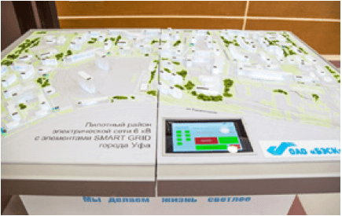
БЭСК подписала соглашение с компанией Siemens AG о производстве в Башкортостане инновационного импортозамещающего электросетевого оборудования для проекта «Умные сети» (Smart Grid).
ОБРАЗОВАНИЕ
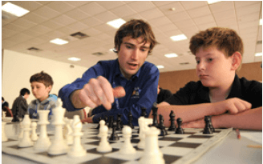
Подписано соглашение между БФ «Система» и НП «Шахматы в школе» о содействии включению шахмат в российскую школьную программу и усилению роли шахмат в образовательных инициативах
-
Март
МОЛОДЕЖНЫЙ САММИТ
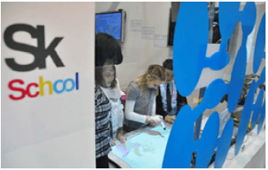
АФК «Система», МТС и SSTL провели международный инновационный молодежный саммит в Московской школе управления «Сколково»
ПАРТНЕРСТВО С РЕГИОНАМИ
АФК «Система» подписала соглашения о социально-экономическом сотрудничестве с правительствами Вологодской и Кировской областей. Segezha Group и Петрозаводский государственный университет подписали соглашение о научно-техническом сотрудничестве.
ХАРТИЯ
ПАО «МТС» и ГК «Детский мир» присоединились к Антикоррупционной хартии российского бизнеса.
ЗАБОТА О ВЕТЕРАНАХ
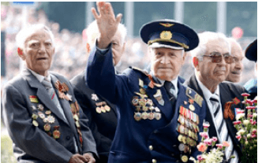
АФК «Система» заключила соглашение о сотрудничестве с Московским городским советом ветеранов войны, труда, Вооруженных Сил и правоохранительных органов (МГСВ). 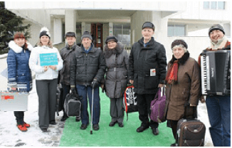 Старт совместной социальной программы БФ «Система», ГК «Медси», МГСВ и Департамента труда и социальной защиты города Москвы по бесплатному санаторно-курортному лечению ветеранов Великой Отечественной войны на базе подмосковного санатория МЕДСИ «Отрадное».
ШКОЛА «ЛИФТ В БУДУЩЕЕ»
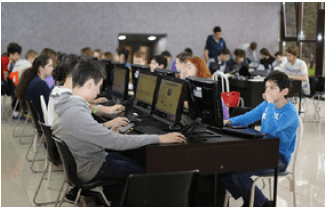
Открытие весенней научно-образовательную школы «Лифт в будущее» в городе Сукко Краснодарского края, в работе которой приняли участие 500 детей со всей России.
ПРЕМИЯ «HR-БРЕНД»
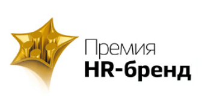АФК «Система» выступила партнером премии «HR-бренд». Почетный член жюри Елена Витчак, вице-президент, руководитель Департамента по управлению персоналом, вручила награды в номинации «Мир» за лучшие HR-проекты, реализованные в России и других странах мира.
-
Апрель
ПОДДЕРЖКА ИННОВАЦИЙ
Нефтесервисный холдинг «Таргин» подписал с Уфимским государственным нефтяным техническим университетом договор о сотрудничестве в области подготовки и переподготовки кадров, внедрения научно-технических разработок, реализации совместных социально значимых проектов, а также с фондом «Сколково» о создании Центра исследований и разработок (R&D-центра) в инновационном центре «Сколково» и выступил региональным спонсором всероссийского «Стартап Тура» (RST), направленного на поиск перспективных инновационных решений и развитие компетенций начинающих стартап-команд, реализующих проекты в сфере высоких технологий.
ВСЕРОССИЙСКАЯ ОЛИМПИАДА
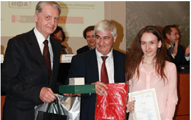
При поддержке МТС Банка в Москве прошел финал X Всероссийской олимпиады по финансовому рынку и основам потребительских знаний для старшеклассников, в которой приняли участие более 6 тыс. старшеклассников со всей России, а также из Казахстана, Узбекистана, Молдовы и Украины.
ЭКОЛОГИЧЕСКАЯ ИНИЦИАТИВА
МТС объявило о старте федеральной программы по защите окружающей среды, в рамках которой в салонах МТС в регионах России будет внедрена комплексная система сбора и утилизации отработанных аккумуляторных батарей телефонов, смартфонов и планшетов
КОНКУРС ПРОЕКТОВ
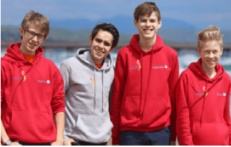
Завершился всероссийский конкурс региональных молодежных проектов «Система приоритетов» 2014–2015 учебного года, очные этапы которого проводились в рамках научно-образовательной школы «Лифт в будущее» во всероссийском детском центре «Смена» (Анапа) при поддержке Министерства образования и науки Российской Федерации и в детской здравнице им. Ю. А. Гагарина (Ступино, Московская область). Всего было подано более 700 заявок.
ПОДДЕРЖКА РУССКОГО МУЗЕЯ
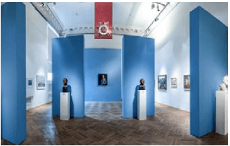
В Государственном Русском музее при поддержке БФ «Система» открылась выставка «Идет война народная. Искусство 1941–1945 гг.». В рамках открытия выставки АФК «Система» совместно с МТС и Комитетом по социальной политике Санкт-Петербурга провели экскурсию для ветеранов Великой Отечественной войны и поздравили фронтовиков и блокадников с 70-летием Победы.
ЧЕСТВОВАНИЕ ВЕТЕРАНОВ
В Центральном доме ученых в Москве состоялся торжественный прием для 200 ветеранов войны и труда – бывших сотрудников предприятий, входящих в АФК «Система».
-
Май
СОЦИАЛЬНОЕ ПАРТНЕРСТВО
Подписано трехстороннее соглашение между АФК «Система», Правительством Москвы, МГСВ о социальном партнерстве в сфере поддержки ветеранов и патриотического воспитания молодежи.
ДЕНЬ ПОБЕДЫ
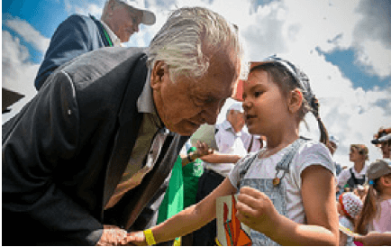
В рамках празднования 70-летия Победы в Великой Отечественной войны более 400 сотрудников 22 компаний Группы АФК «Система» приняли участие в качестве волонтеров в поздравлении и оказании помощи ветеранам в Москве.
В рамках акции «Волонтерский сад Победы» сотрудники Корпорации приняли участие в благоустройстве территории четырех подшефных детских домов, где были организованы субботники и праздничные встречи детей и ветеранов.
На территории Государственного военно-исторического музея-заповедника «Прохоровское поле» в Белгородской области состоялось торжественное открытие новой экспозиции бронетанковой техники, создание которой поддержал БФ «Система».
РОУД-ШОУ В САУДОВСКОЙ АРАВИИ
АФК «Система» выступила генеральным спонсором Недели российского бизнеса «Россия и Саудовская Аравия – новые перспективы торгово-экономического и инвестиционного сотрудничества» и роуд-шоу российских регионов в городе Джидда под эгидой российского посольства в Саудовской Аравии и Торгово-промышленной палаты Российской Федерации.
-
Июнь
УЧАСТИЕ В ЭКОНОМИЧЕСКОМ ФОРУМЕ
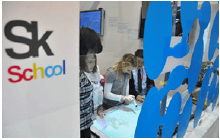
Топ-менеджеры АФК «Система» во главе с председателем Совета директоров Владимиром Евтушенковым и президентом Михаилом Шамолиным провели на полях XIX Петербургского международного экономического форума (ПМЭФ) десятки деловых встреч и приняли участие в работе ключевых секций.
В Санкт-Петербурге при поддержке АФК «Система» состоялся Российско-Саудовский бизнес-форум, в котором приняли участие топ-менеджеры Корпорации.
СОГЛАШЕНИЯ С РЕГИОНАМИ
АФК «Система» подписала на ПМЭФ-2015 соглашения о сотрудничестве с правительствами Архангельской и Иркутской областей.
КОРПОРАТИВНЫЙ СУББОТНИК
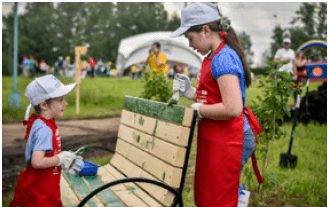
АФК «Система» провела общекорпоративный экосубботник «Энергия Системы» на территории подмосковного санатория МЕДСИ «Отрадное» при участии более 2 тыс. сотрудников Корпорации. Топ-менеджеры Корпорации вместе с ветеранами заложили памятную Аллею Победы
-
Июль
СЕМИНАР ПО КОРПОРАТИВНОЙ СОЦИАЛЬНОЙ ОТВЕТСТВЕННОСТИ
АФК «Система» совместно с МТС провели корпоративный семинар по социальной ответственности, который собрал более 50 представителей дочерних компаний Корпорации.
ВЫСОКИЕ ТЕХНОЛОГИИ ДЛЯ МОСКВЫ
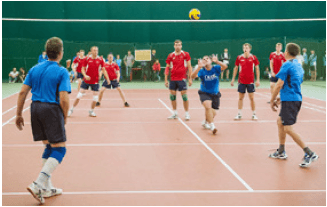
«Микрон» заключил контракт с ГУП «Мосгортранс» на поставку бесконтактных проездных билетов для наземного транспорта, став основным поставщиком проездных билетов для всей транспортной сети Москвы, а именно: наземного, подземного транспорта и пригородных электричек.
-
Август
РЮКЗАК ДЛЯ ПЕРВОКЛАССНИКА
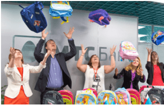
К началу нового учебного года по инициативе БФ «Система» и Московского дома книги стартовала волонтерская акция по сбору школьных принадлежностей для воспитанников 30 детских домов Москвы и Московской области
МАКС-2015
РТИ и Группа «Кронштадт» продемонстрировали новейшие разработки на XII Международном авиационно-космическом салоне в Жуковском Московской области.
АФК «Система» поддержала программу чествования ветеранов и героев авиации «Крылья Победы». Для почетных гостей была организована специальная культурная программа с участием курсантов военных училищ и предоставлены ВИП-трибуны для наблюдения за показательными полетами.
-
Сентябрь
МИКРОЭЛЕКТРОНИКА
«Микрон» стал резидентом Особой экономической зоны «Зеленоград», в рамках которой реализует инвестиционный проект по разработке технологий производства микросхем.
НЕДЕЛЯ ЗНАНИЙ
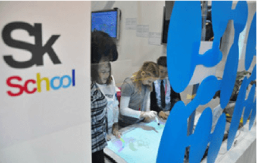
В АФК «Система» впервые прошла Неделя знаний, в которой приняли участие более 400 сотрудников Корпорации.
СПАРТАКИАДА
Состоялась XIII летняя спартакиада АФК «Система» на стадионе «Янтарь», в которой участвовало 17 команд Корпорации в 14 видах спорта
ПРАЗДНИК ОТВЕТСТВЕННОГО ОТНОШЕНИЯ К ЛЕСУ
АФК «Система», МТС и РТИ приняли участие в международной экологической инициативе «FSC-пятница», организованной Лесным попечительским советом (FSC) в поддержку ответственного отношения к лесу, заняв первое место по объему собранной для переработки бумаги среди российских компаний – участников акции.
-
Октябрь
КНИГА ПЯМЯТИ
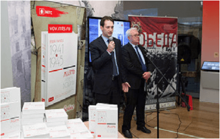
МТС торжественно передала в Государственный исторический музей уникальную книгу памяти «Жизнь во время войны. 1941–1945 гг.», куда вошло более 320 историй и фотографий участников войны, собранных их родственниками – сотрудниками компании
ФОРУМ ПО ЭНЕРГЕТИКЕ
БЭСК выступила генеральным спонсором XV Российского энергетического форума «Эффективная энергетика» в Уфе, собравшего более 1,5 тыс. профессионалов отрасли. В рамках форума БЭСК и ПАО «Россети» подписали соглашение о взаимодействии в области единой технической политики.
ФОРУМ ТАЛАНТОВ В ЯРОСЛАВЛЕ
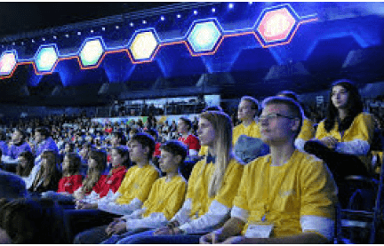
На III Всероссийском форуме «Будущие интеллектуальные лидеры России» НП «Лифт в будущее», МТС и РТИ совместно представили образовательные программы и провели мастер-классы для молодежи
-
Ноябрь
НЕДЕЛЯ САУДОВСКОГО БИЗНЕСА
Председатель Совета директоров АФК «Система» Владимир Евтушенков принял участие в заседании Российско-Саудовского Делового Совета и Совместной межправительственной Российско-Саудовской комиссии по торгово-экономическому и научно-техническому сотрудничеству.
С саудовской компанией «Вафрат Ат-Тавасуль» (Wafrat Al Tawasul) подписаны меморандумы о намерениях по созданию российско-саудовской инвестиционной компании для капиталовложений в агропромышленный сектор, строительство инфраструктуры, транспорт и другие отрасли и создании на территории Королевства Саудовская Аравия совместного предприятия с АО «Таргин» по изготовлению буровых долот.
КОРПОРАТИВНОЕ ОБРАЗОВАНИЕ
В Высшей школе управления и инноваций Московского государственного университета им. М. В. Ломоносова состоялось открытие новой корпоративной программы профессиональной переподготовки «Инновации в девелопменте» для топ-менеджеров АО «Лидер-Инвест».
-
Декабрь
ПОДДЕРЖКА ВОЛОНТЕРСТВА
БФ «Система» выступил соорганизатором IV Московского международного форума «Корпоративное волонтерство: бизнес и общество», в котором приняли участие представители АФК «Система», БФ «Система», МТС, «Медси», «Детского мира», «Стрим» и сотрудники других компаний Корпорации
ПАРТНЕРСКИЕ СОГЛАШЕНИЯ
МТС подписала соглашения со шведским производителем телекоммуникационного оборудования Ericsson о сотрудничестве в разработке и внедрении в России технологий связи пятого поколения (5G) и международным производителем бытовой техники REDMOND о партнерстве в области разработки и продвижения «умной» бытовой техники и других приборов.
БЭСК и Уфимский государственный нефтяной технической университет подписали договор о сотрудничестве в сфере образовательной, научно-исследовательской и инновационной деятельности, профессиональной ориентации и содействия трудоустройству выпускников.
БЛАГОТВОРИТЕЛЬНЫЕ АКЦИИ
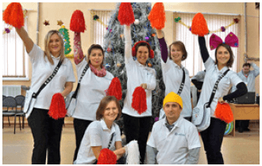
В рамках традиционной благотворительной акции «Елка желаний» тысячи сотрудников из разных компаний Корпорации приняли участие в исполнении желаний детей, оказавшихся в сложной жизненной ситуации, – приобретении подарков, проведении волонтерских туров и новогодних праздников для воспитанников восьми подшефных детских домов.
МТС и «Детский мир» провели в Центральном доме культуры железнодорожников совместную новогоднюю благотворительную елку для детей с трудной судьбой.